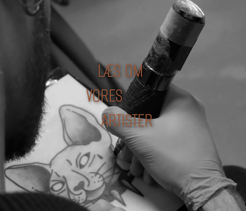
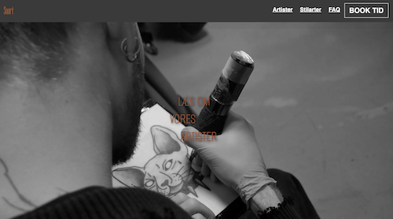

Tema 5
Noter af Tema 5

Formål
Temaet gav en grundlæggende indføring i indholdsproduktion fra præ- til postproduktion. Smartphone-kameraer blev brugt, og der blev arbejdet med animeret vektorgrafik (LottieFiles). Tidligere færdigheder blev anvendt til at redesigne en virksomheds hjemmeside.

Proces
Under tema 5 arbejde vi sammen i grupper, hvor der var fokus på sammenarbejde. Herunder at kunne tilpasse site til en bestemt målgruppe og brugevenligt.

Læring
Vi lærte om, hvordan man bedst muligt arbejder sammen som, hvis man faktisk sad med en virksomhed. Vi lærte også om hvordan man tester ens website så man sikre den bedste oplevelse for brugeren.